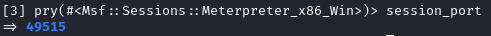
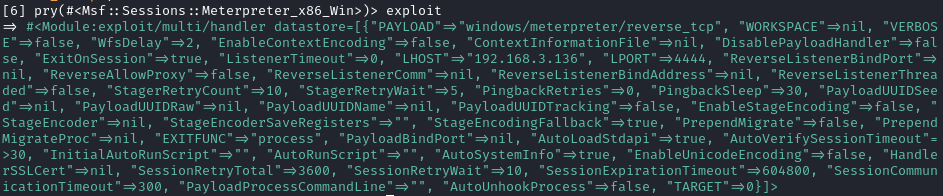

Pry shell to understand ruby commands
If we want use Ruby commands on meterpreter
If we have some errors, install the following gems
Note that we are already using client object, so we do not need to specify it in the commands
• Address of the target machine
• Port of the target machine listening
 • Complete list of methods that we can use:
methods.each{ |i| puts i}
• Information about the exploit used
 payload used
exploit.datastore['payload']
• Color outputs
print_good "my name is daniele"
print_status "my name is daniele"
print_warning "my name is daniele"